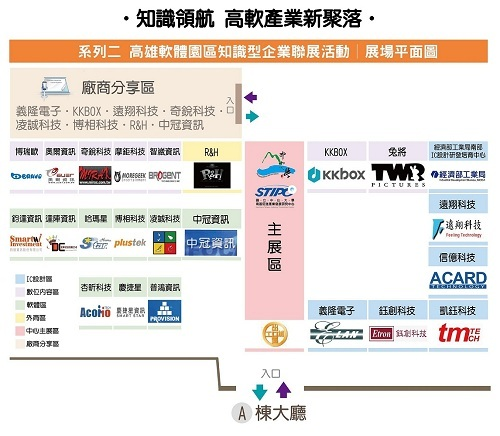

知識領航 - 高軟產業新聚落 - 11月24日（六）高雄軟體園區知識型企業聯展

「高雄軟體園區」是南部新興發展的重要指標性園區，也是南臺灣唯一由經濟部管轄支持的純研發設計園區，亦是帶領高雄從傳統重工業轉型向研發設計產業的重要發展契機。
國立中山大學特別成立「南區促進產業發展研究中心」，於 2008 年初，即進駐高雄軟體園區，投入園區發展。
在各界共同努力下，促成目前許多重要知識密集型廠商於南部發展成果，包含：
- 經濟部工業局南部 IC 設計中心：進駐高軟園區，引進 10 餘間公司進駐。
- 指標性 IC 設計廠商：義隆電、信億科技、鈺創科技、凱鈺科技、聯傑國際五間上市櫃公司進駐高雄軟體園區。
- 指標性數位內容廠商：R&H、兔將創意、奇銳科技、KKBOX、智崴資訊...等。
- 在地優質企業：中冠資訊、智冠資訊、摩鉅科技、奧爾資訊、凌誠科技、博相科技、鈞達資訊…等。
在 11/24（六）下午，這些廠商會在這次的活動中，將他們在南部設立據點的發展理念，堅持在南部發展的想法與成功的模式，一次呈現給您！
不可錯過這次的機會，誠摯邀請您，回南部來看看-高雄軟體園區！
詳情請上活動網址或上網搜尋『高軟產業新聚落』。
